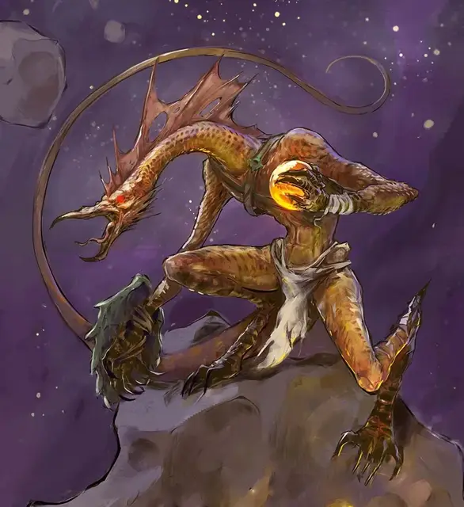

Ссуран-отравитель
Ssurran Poisoner
Средний Монстр (Людоящер), любое мировоззрение

Класс Доспеха 16 (природный доспех, крепость интеллекта)
Хиты 22 (4к8 + 4)
Скорость 30 футов, плавая 30 футов
| мод | спас | ||
|---|---|---|---|
| СИЛ | 13 | +1 | +1 |
| ЛОВ | 12 | +1 | +1 |
| ТЕЛ | 13 | +1 | +1 |
| мод | спас | ||
|---|---|---|---|
| ИНТ | 12 | +1 | +1 |
| МДР | 12 | +1 | +1 |
| ХАР | 7 | −2 | −2 |
Навыки Восприятие +3, Выживание +3, Скрытность +3
Чувства пассивное Восприятие 13
Языки Драконий
Опасность 1/2 (100 опыта)
Бонус мастерства +2
Особенности
Задержка дыхания. Ссуран может задержать дыхание на 15 минут.
Действия
Мультиатака. Ссуран совершает две атаки Когтями.
Коготь. . Рукопашная атака оружием: +3 к попаданию, досягаемость 5 фт., одна цель. Попадание: 4 (1к6 + 1) рубящего урона.
Метательное копьё. . Рукопашная или дальнобойная атака оружием: +3 к попаданию, досягаемость 5 фт., или дистанция 30/120 фт., одна цель. Попадание: 4 (1к6 + 1) колющего урона плюс 4 (1к8) урона ядом.
Ядовитая бомба. Ссуран бросает бомбу размером с мандарин в точку в пределах 60 футов, где та взрывается, наполняя сферу радиусом 10 футов быстро рассеивающимся ядовитым газом. Все существа в сфере должны совершить спасбросок Телосложения Сл 11, получая 10 (3к6) урона ядом при провале или половину этого урона при успехе. После того, как ссуран бросит бомбу, бросьте к6. Если выпадет «4» или меньше, у ссурана больше не остаётся бомб для броска.
Описание
Ссураны-отравители покрывают свое оружие токсином и бросают бомбы, выделяющие ядовитый газ.
Ссуран
Ссураны — это людоящеры, приспособившиеся к жизни в засушливом климате и Диком космосе. Вы можете воспользоваться блоками статистики людоящеров [lizardfolk], чтобы представить их, в качестве дополненных вариантов.